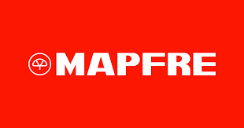

|
|
Nuestro plan de seguro de automoviles consta de 3 modelos disponibles para usted, y se acomodan a su presupuesto:
Cobertura Responsabilidad Civil:
Esta cobertura solo cubre los daños o lesiones que cause el vehículo que está asegurado a terceros ya sean en sus bienes o personas, quedan excluidos el robo del vehículo y sus daños.
Cobertura Limitada:
Esta cobertura cubre los daños o lesiones que cause el vehículo que está asegurado a terceros ya sean en sus bienes o personas y también está amparado el robo del vehículo, en esta cobertura no quedan amparados los daños del vehículo asegurado.
Cobertura Amplia:
Esta cobertura cubre los daños o lesiones que cause el vehículo que está asegurado a terceros ya sean en sus bienes o personas queda amparado el robo del vehículo y también quedan amparados los daños del vehículo asegurado.
|
|
|
En nuestras polizas de seguro para tu hogar se puede ver otro surtido de variedad, cada una de las siguientes opciones se ajustan dependiendo de lo que usted necesite:
Poliza de daños:
Asi como se indica en el nombre, en caso de incendios o accidentes que lleguen a destruir tu hogar bajo esta poliza nos haremos cargo de pagar parte de la deuda tras el accidente a la hipoteca posteriormente solicitada al banco, y si el daño no es severo, por lo que llega a sobrar dinero despues del pago, te lo depositaremos directamente a tu cuenta.
Poliza multirriesgo:
Esta increible poliza asegurara tu hogar, no solo contra accidentes o incendios, tambien cubrira tus bienes inmobilarios, en caso de daños por agua o electricidad, incluso contra robos, daños atmosfericos y mucho mas, porque tu bienestar es lo primordial.
|
|

|
Por ultimo pero no menos importante te presentamos nuestros planes de polizas de seguro de vida, piensa en tus hijos y tu familia, y obten el seguro de vida que consideres mas apropiado o los mas apropiados:
Seguro de vida riesgo:
En esta modalidad, puedes dejar el nombre de un beneficiario, el cual tras su partida recibira una cantidad pre-establecida en nuestro acuerdo, porque siempre puedes cuidarlos de alguna forma aunque ya no estes para ellos.
Seguro de vida ahorro:
Bajo esta modalidad usted puede cobrar lo estipulado en el contrato tras llegar a una fecha establecida en el mismo, porque vivir es hermoso y seguramente su yo del futuro le agradecera esta gran decision.
Seguro de vida mixto:
Para que tener solo uno de los anteriores seguros de vida mencionados, cuando puedes tener ambos al alcanze de tu mano, pues de eso trata este seguro el cual ofrece lo mejor de lo mejor, porque por escoger este modelo podra ser un heroe no solo para su familia sino tambien para usted, no espere mas y solicite su seguro de vida mixto.
|